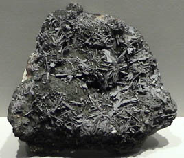

|

| (Tl, Pb)2As5S9
This sample of hutchinsonite is displayed in the Smithsonian Museum of Natural History. Hutchinsonite is a sulfide mineral of thallium, lead and arsenic with the composition (Tl, Pb)2As5S9. The sample is about 12x12 cm and is from Henderson mine #2, Quiruvilea, La Libertad, Peru.
|